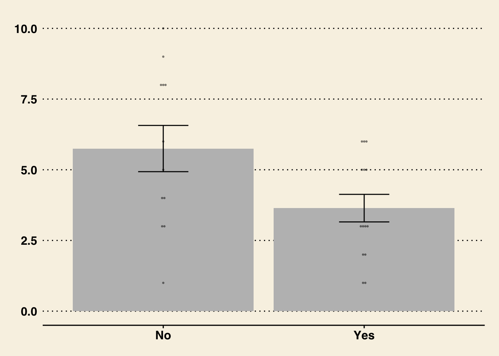

9:20 - 10:30 | Linear Model when the IV is categorical
10:30 - 10:45 | BREAK
10:45 - 11:05 | Student Presentations!
11:10 - 12:00 | T-Tests and Work on Lab 6
Mini Exam Debrief
Not yet graded!
Professor should post key? [Y/N]
Mega Exam :
Rescheduled : to 4/18 or 4/25 [???]
De-emphasized : now worth 10% of your grade (other 10% shifted to the chill final project)
Will be shorter? Group exam? A whole week to do like a lab? IDK. Let’s check in later and see where we are at.
Ideas / Suggestions :
More practice in class; group work (in lecture, in section)??
Mixed responses about article discussions.
Y’ALL : Please Message / Email / Discord if Confused or Stuck (on Lab, in Class, etc.)
The Linear Model in (Categorical IV) Form
Two-Level Categorical IV : Simple!
Step 1 : Develop a Question and Set Hypotheses.
Let’s determine whether people who had breakfast were more or less hungry than people who did not have breakfast.
OUR THEORY : people who eat breakfast are less hungry than those who do not.
Null Hypothesis (latin for “not any” / none) : no difference or eating breakfast –> More hunger.
Alternative Hypothesis : people who eat breakfast are less hungry than those who do not.
QUESTION : what do you do when you feel the urge / see to HARK (hypothesis after results known)?
why it’s a problem ??? :
the data could be a form of error (type I or type II); but more likely to cause problems if your theory is only based on the data, and not past research.
we are always going to be biased to find a result that works in our favor.
be transparent : “oh! cool!! Now I’m interested in this idea….let’s replicate.”
pre-registration : make your hypotheses in advance (and time-stamp them) and then update them if they change.
Step 2 : Load Data, Graph and Evaluate Your Individual Variables.
m <-read.csv("~/Dropbox/!GRADSTATS/gradlab/Datasets/MiniGrad/mini_grad_data.csv", stringsAsFactors = T)head(m) # looks good
Our model will predict hunger from whether people had breakfast.
As before, we define a linear model using the lm function, and will see an intercept and slope.
mod <-lm(hunger ~ had.breakfast, data = m)coef(mod)
(Intercept) had.breakfastYes
5.750000 -2.107143
The Model :\(\hat{Y} = a + b_1 * X_1\)
\(a\) (sometimes = Intercept = Predicted Value of Y when all X values are zero.
\(X_1\) = A dummy coded categorical variable. This is often the default method of comparing two groups, and compares each level of the factor to a reference level.
\(X_1\) = 0 = had.breakfast = No (Not Yes)
\(X_1\) = 1 = had.breakfast = Yes
\(b_1\) = the slope = the predicted change in Y as X changes by 1
Using the Model to Make Predictions
predicted hunger if had.breakfast = Yes?
predicted hunger = 5.75 - 2.1 * had.breakfastYes
predicted hunger = 5.75 + -2.1 * 1 = 3.65
predicted hunger if had.breakfast = No?
predicted hunger = 5.75 - 2.1 * had.breakfastYes
predicted hunger = 5.75 - 2.1 * 0 = 5.75
Note that these values are the same as the average hunger for people who had breakfast and for people who did not have breakfast.
brekY <- m[m$had.breakfast =="Yes",]brekN <- m[m$had.breakfast =="No",]mean(brekY$hunger) # the intercept + the slope
[1] 3.642857
mean(brekN$hunger) # the intercept
[1] 5.75
tapply(m$hunger, m$had.breakfast, mean) # another way to do this.
No Yes
5.750000 3.642857
The Graph. A few ways to graph the linear model with the IV is categorical.
Note that the plot() function draws a boxplot that illustrates the median of each group; whereas the linear model emphasizes the mean.
plot(hunger ~ had.breakfast, data = m)
For “quick” methods, I like plotmeans() from the gplots() library. This plots the mean of each group.
#install.packages("gplots")library(gplots)
Attaching package: 'gplots'
The following object is masked from 'package:stats':
lowess
plotmeans(hunger ~ had.breakfast, data = m, connect = F, ylim =c(0,10))
ggplot2 also has a method; nice for illustrating the individual points and making the graph look more professional?
library(ggplot2)library(ggthemes)ggplot(m, aes(x=had.breakfast, y=hunger)) +# defining my spacestat_summary(fun=mean, geom="bar", fill="gray") +# adding a bar for the meansstat_summary(fun.data=mean_se, geom="errorbar", width=0.25) +# adding sampling error [more on this later!]geom_dotplot(binaxis='y', binwidth=0.1, stackdir="center", alpha=0.5, stroke=0, dotsize=0.8) +# adding dots for the individual data; sorting themcoord_cartesian(ylim=c(0,10)) +# changing the limits of my y-axis.xlab("Brekky") +ylab("Hunger") +# adding labelstheme_wsj() # adding a theme

Step 4 : Evaluate Your Model
Diagnostic Plots to see if those assumptions are met!
par(mfrow =c(2,2))plot(mod)
\(R^2\) (Effect Size)
How large is this difference? \(R^2\) gives some context.
summary(mod)$r.squared
[1] 0.1791375
## ILLUSTRATING R^2 WHEN THE VARIABLE IS CATEGORICALpar(mfrow =c(1,2))plot(m$hunger)abline(h =mean(m$hunger, na.rm = T), lwd =5)residuals <- m$hunger -mean(m$hunger, na.rm = T)SST <-sum(residuals^2)SST
[1] 160.1538
## THE MODELplot(m$hunger, col = m$had.breakfast, pch =19)abline(h =coef(mod)[1], lwd =5, col ='black') # line for non breakfast folksabline(h =coef(mod)[1] +coef(mod)[2], lwd =5, col ='red') # line for non breakfast folks
SSM <-sum(mod$residuals^2)## R^2(SST - SSM)/SST
[1] 0.1791375
This describes the percentage of variation in hunger that is explained by our model (in this case, using whether someone had breakfast to make predictions of hunger.) So, using the model to make predictions of hunger reduces our squared errors by %17 (vs. using the mean to make predictions.)
Something New : Cohen’s D (Effect Size)
Okay, but people find \(R^2\) confusing and unitless and about squared numbers and describes how good the model is as a whole; sometimes I just want to understand how BIG the difference between the groups is. One method people us is to compare the distance between groups, relative to the average distance between individuals (the standard deviation.)
However, if we are assuming these groups are different in some important way, then we may not want to use a standard deviation statistic that considers individuals to belong to the same group. The pooled standard deviation is a weighted average of the standard deviation from each group.
nY <-nrow(brekY)nN <-nrow(brekN)dfY <- nY-1# the sample size of breakfast eaters, minus 1dfN <- nN-1varY <-var(brekY$hunger)varN <-var(brekN$hunger)poolvar <- ((dfY * varY) + (dfN * varN))/(dfY + dfN)poolsd <- poolvar^.5diff <-coef(mod)[2] # the difference between groupsdiff/poolsd
had.breakfastYes
-0.9003175
The psych package has a cohen’s d function built in that calculates this for you. (Not sure why we are getting different manual estimate from the package tho?)
library(psych)
Attaching package: 'psych'
The following objects are masked from 'package:ggplot2':
%+%, alpha
cohen.d(m$hunger, m$had.breakfast)
Call: cohen.d(x = m$hunger, group = m$had.breakfast)
Cohen d statistic of difference between two means
lower effect upper
[1,] -1.74 -0.94 -0.11
Multivariate (Mahalanobis) distance between groups
[1] 0.94
r equivalent of difference between two means
data
-0.42
cohen.d(hunger ~ had.breakfast, data = m)
Call: cohen.d(x = hunger ~ had.breakfast, data = m)
Cohen d statistic of difference between two means
lower effect upper
hunger -1.74 -0.94 -0.11
Multivariate (Mahalanobis) distance between groups
[1] 0.94
r equivalent of difference between two means
hunger
-0.42
Okay, so what does this statistic mean? Well, this tells us that the difference between folks who had breakfast and those who did not (the slope in our model) is not even as large as the difference between any two random individuals (the pooled sd). But is this a little? A lot?
Many people reference Cohen’s “convention” of what defines effect size to be small (d = .2), medium (.5), and large effect (d = .8). However, this summary glosses Cohen’s disclaimer, as well as a ton of other context that Cohen provides in his original book.
ACTIVITY : Look over this nice interactive guide for interpreting Cohen’s D. How does this visualization help you think about the difference? Does this difference seem like a little? A lot??
R will default to a reference level based on alphabetical order, so in this case, “No” will be the reference group. To change the reference group, you can relevel the factor.
m$had.breakfastR <-relevel(m$had.breakfast, ref ="Yes")plot(m$had.breakfastR) # same data, different orientation
modR <-lm(hunger ~ had.breakfastR, data = m)coef(modR)
(Intercept) had.breakfastRNo
3.642857 2.107143
par(mfrow =c(1,2))plotmeans(hunger ~ had.breakfast, data = m, main ="No as Reference Group")plotmeans(hunger ~ had.breakfastR, data = m, main ="Yes as Reference Group")
When the IV has more than 2 levels….professor demo on the board.
Racecraft - historical and sociological critique of race as a category.
inspired a few psych research articles; prof will find.
The T-Test
Our linear model compares the difference between two groups. This is similar to what a t-test does. However, the t-test also compares this difference to an estimate of sampling error - the standard error - that estimates how much of a difference we might find if we were drawing a random sample from a population where there was no difference in groups (the null population.)
The basic equation for the standard error is : \(se = sd(x) / \sqrt{n}\)
We can easily pull up these statistics using the summary() function. The interpretation of these statistics will take more time!
summary(mod)
Call:
lm(formula = hunger ~ had.breakfast, data = m)
Residuals:
Min 1Q Median 3Q Max
-4.7500 -1.7232 -0.6429 2.2500 4.2500
Coefficients:
Estimate Std. Error t value Pr(>|t|)
(Intercept) 5.7500 0.6756 8.511 1.04e-08 ***
had.breakfastYes -2.1071 0.9207 -2.289 0.0312 *
---
Signif. codes: 0 '***' 0.001 '**' 0.01 '*' 0.05 '.' 0.1 ' ' 1
Residual standard error: 2.34 on 24 degrees of freedom
Multiple R-squared: 0.1791, Adjusted R-squared: 0.1449
F-statistic: 5.238 on 1 and 24 DF, p-value: 0.03121
Standard Error is similar to the sampling error we estimated through bootstrapping (you will test this in Lab 6!).1
sqrt((poolvar/nY) + (poolvar/nN))
[1] 0.9207258
However, there are a few key conceptual and computational differences.
we want to estimate how much our statistics might change due to re-sampling, because our sample isn’t a perfect representation of the population.
we generate lots of “new” samples from our original dataset. these new samples are the same size as our original sample, but we use sampling with replacement to make sure we don’t get the exact same people in the sample every time. the goal is to see how small changes to our sample (that we might find with sampling error) influence our results (the model).
we calculate a statistic that is based on:
the variance in our sample (with the idea that the more individuals vary in the sample, the more sampling error we might have)
our sample size (with the idea that the larger our sample, the less sampling error we will find.)
statistic we care about that defines sampling error
standard deviation of the 1,000 (or however many) slopes we generated from bootstrapping.
standard error (estimates how much the average slope would differ from b = 0….the expected slope assuming the null)
how to evaluate our slope, relative to sampling error
calculate the % of slopes in the same direction as our slope
calculate 95% confidence intervals, and see whether that range includes zero and / or numbers in the opposite direction of the slope you found. (e.g., if you found a negative number, does the range include positive numbers? If so, then likely we’d find a positive relationship due to chance)
t-value : evaluates slope you found, relative to slope you might find due to random chance.
use the t-value to calculate the probability given your distribution, and reject if p < .05
(or be more conservative and reject if p < .01 or p < .001).
Note that the t-test does the same thing that our linear model does; evaluates the difference in groups, relative to an estimate of the sampling error we might observe.
summary(mod)
Call:
lm(formula = hunger ~ had.breakfast, data = m)
Residuals:
Min 1Q Median 3Q Max
-4.7500 -1.7232 -0.6429 2.2500 4.2500
Coefficients:
Estimate Std. Error t value Pr(>|t|)
(Intercept) 5.7500 0.6756 8.511 1.04e-08 ***
had.breakfastYes -2.1071 0.9207 -2.289 0.0312 *
---
Signif. codes: 0 '***' 0.001 '**' 0.01 '*' 0.05 '.' 0.1 ' ' 1
Residual standard error: 2.34 on 24 degrees of freedom
Multiple R-squared: 0.1791, Adjusted R-squared: 0.1449
F-statistic: 5.238 on 1 and 24 DF, p-value: 0.03121
t.test(brekY$hunger, brekN$hunger, var.equal = T)
Two Sample t-test
data: brekY$hunger and brekN$hunger
t = -2.2886, df = 24, p-value = 0.03121
alternative hypothesis: true difference in means is not equal to 0
95 percent confidence interval:
-4.0074275 -0.2068582
sample estimates:
mean of x mean of y
3.642857 5.750000
Activity : Work on Lab 6.
Define a linear model to see whether breakfast (the most important meal of the day) is related to another numeric outcome variable.
Graph the relationship between the two variables.
Report and interpret statistics : intercept, slope, \(R^2\), cohen’s d.
Compare bootstrapping method to NHST method of estimating sampling error.
Read more about NHST and linear models when there’s 3 or more levels.
Footnotes
(And side note : to get what R calculates in our model, we will weight each pooled variance by the sample size of each group.)↩︎